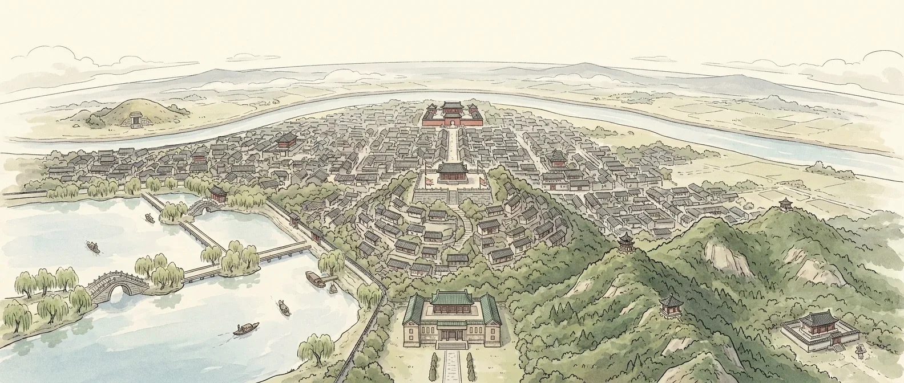

故黄河01 · 长卷
彭城七里长卷
向下滚动，长卷向左展开，朱雀由北向南飞过九个地方。
02 · 景点
九处彭城
按时间分成三个篇章。卡片上显示此刻是否开放，点进去看故事、文化出处、门票和怎么到。
03 · 汉代三绝
汉墓 · 汉兵马俑 · 汉画像石
徐州的汉代遗存里，这三样最常被并称为“汉代三绝”。前两样去现场看，第三样，先在这里动手拓一张。
04 · 彭城手艺
还活着的老手艺
汉代的遗存在博物馆里，老手艺还在街巷和节日里。这四项都列入了国家级非物质文化遗产代表性项目名录（项目名称以名录为准）。
05 · 交通
交通导览
任选起点和终点，算出地铁、公交和步行怎么走；也可以把几个景点拼成一天的行程。
从哪到哪
拼一天的行程
点景点加入行程，用 ↑ ↓ 调整顺序。
地铁示意图
线路、站点来自徐州地铁和各景区公开信息；分钟数是估算，出发前请用导航确认实时信息。